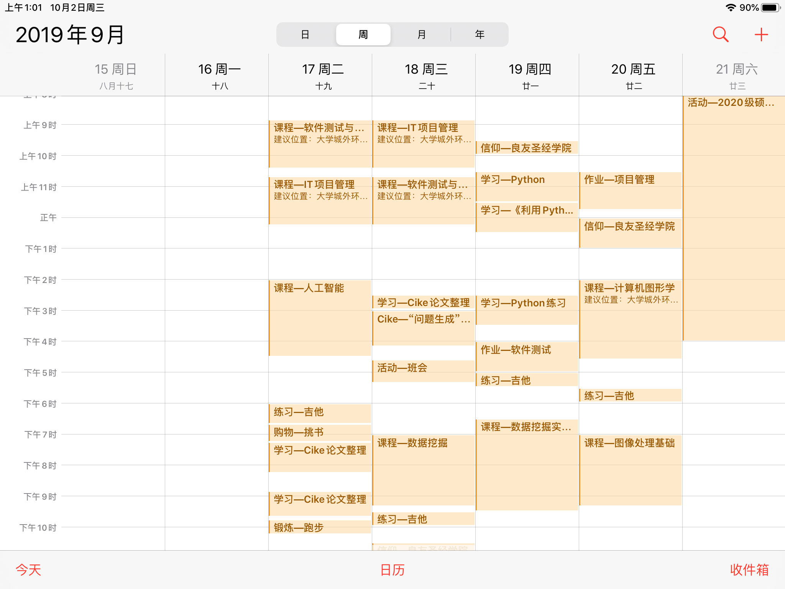

iPad软件个人推荐
前言
用iPad来做学习工具已经一个学习多了，鉴于身边有意向购买、使用iPad的人似乎日渐增多，写下此篇小文章来介绍一下我日常使用的几款不错的软件。另外，本人的设备包含iPad（第六代）和Pencil（一代，二代不支持iPad Air）。下面是iPad和pencil的照片（随便乱拍，不要介意，汗汗），另外是不是黑框的比白框的显得更大气、神秘、好看呢，吼吼～
好的，开始正文，本文介绍的软件主要是以下六款（Notability，MindNode，Kindle，PDF Expert，Agenda和iPad自带的日历），其中Notability, MindNode 和 PDF Expert 都是收费的软件哦。

正文
1. Notability
简介
- Notability 主要作为一个笔记软件，搭配Pencil能发挥它的价值。不过由于我的课堂笔记一般用MindNode记成思维导图的形式，一些学习笔记则在电脑上用Markdown来记录，所以我的Notability主要用来写留言、打草稿、做会议记录之类的草记。
喜欢的点
- 框选复制：导出后，可以直接粘贴到其它软件变为图片格式，对于一些无法打出来的内容（如公式）还是很方便的选择；
- 画笔直线、圆形：长按停留后可以直接变为直线或圆形；
- 支持PDF格式：Notability中也可以导入pdf格式图片；
可能的局限
- 无法输入公式，只能手写（不支持MarkDown）；
软件截图
下图左图是界面目录的截图，右侧是这学期的计算机图形学课程的图形处理流程的草图。
2. MindNode
简介
- MindNode是一款思维导图工具软件，帮助绘制思维导图。不过现在App Store中也有了一些新的免费的思维导图软件，像XMind之类的，不过绘制思维导图而言，MindNode是完全够用的，不过如果是新用户，可以先观察一下其它的软件，再做衡量。
喜欢的点
- 方便、直接的文件夹管理；
- 容易、便捷的绘制思维导图操作；
- 可以通过iCloud与Mac传输，可以导出其它格式；
可能的局限
- 无法输入公式，只能以截图格式实现；
- 无法在思维导图外写入文本，有提供注释，但没法自己随意写；
- 思维导图铺得比较开，不够紧凑，感觉上会有很多闲置空间（效果看下图）；
软件截图
下图为MindNode的目录展示：
下图仍是计算机图形学课程第一章的思维导图展示（其中的加框图片就是从Notability中复制进来的）：
3. Kindle
简介
- 电子书阅读器这个就不用说了，在亚马逊上购买好后，关联账户就可以直接阅读了，方便、快捷、省钱。是否购买主要还是看个人是否对亚马逊的电子书有需求（本人好多书都只看了一小部分，然后就结束了，汗颜）。
软件截图
下图，左侧为打开目录，右侧为《高性能MySQL》中的一页。

4. PDF Expert
简介
- PDF阅读器，论文、PDF书籍的绝佳阅读软件。
喜欢的点
- 管理方便，注释、圈画便利，支持pencil直接手写；
- 可以双页展示、垂直滚动、水平翻滚；
可能的局限
- 当PDF不是文件而是图片的时候，标记加下划线就只能一行一行画横线了（其实也还好啦）；
软件截图
同样的，左侧是我的Article文件夹下的目录情况，右图是其中一篇论文的打开情况。

5. Agenda
简介
- 制定计划、目标、日志的软件，个人的话，目前日历软件取代了Agenda的一部分功能。
喜欢的点
- 免费！免费的！
- 可以方便的放目标（打勾的图框）；
- 能与日历关联，选择一天、一周还是其它的时长；
可能的局限
- 主体的语言是英语（当然自己可以输入英文）；
软件截图
上面是一周的计划，下面是单日的。
6. 日历
简介
- iPad自带的日历软件，最近几周才开始使用，才发现它的魅力——促进时间利用、督促自己（我比较懒，会浪费很多时间）。
喜欢的点
- 可以与mac、iphone直接关联提醒（由于我妈的iPhone用的是我的Apple ID，所以她也看得到我的，嘤嘤）；
- 方便设置时间段的安排，能督促学习，吼吼；
可能的局限
- 没有更多的功能？
软件截图
下图就是展示了啦，安排、安排！（最近几天又开始犯懒不安排了，这不又弄到了凌晨了不是，太难了QAQ）

后记
- 再说一次，其中Notability, MindNode 和 PDF Expert 都是收费的软件，收费的软件，收费的软件哦！另外，这些软件都是直接从App Store中下载的哦。
- 另外，软件再好，iPad再好，看了这篇文章你再心动，也未必有用哦！因为没有“用来学习”的觉悟与决心，或许你的iPad最后只能沦为一个看视频、玩游戏的设备了，很多人都这样，不用灰心，反正比手机屏幕大，看视频、玩游戏更快乐不是，嘿嘿～
- 最后一件事，国庆快乐～目标是星辰大海！